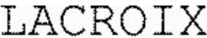

Trade Mark Journal No.2025/046 14 November 2025
WO0000001871601 (9,18,25,28)
Office of origin: France
Date of International Registration:2 April 2025
Date of designation in the UK:
2 April 2025

International priority date claimed: 3 October 2024
(France)
(5087228)
- Class 9
- Protective clothing; protective helmets; spectacles; eyeglasses; anti-glare glasses; goggles; ski goggles; snow goggles; sunglasses; cyclists' goggles; diving goggles; goggles for sports; swimming goggles; glacier goggles; swim masks; diving masks; electronic apparatus for locating people; binoculars; compasses and altimeters; sports bags designed for protective helmets [pre-shaped]; ski helmets; cyclist helmets; skateboard helmets; helmets for sports; snowboard helmets; protective gloves; life jackets; smart watches.
- Class 18
- Leather and imitations of leather; animal skins and hides; trunks and suitcases; umbrellas and parasols; walking sticks; whips, harness and saddlery; mountaineering sticks; straps of leather [saddlery]; harness straps; collars for animals; horse collars; horse blankets; coverings of skins [furs]; pads for horseback riding saddles; stirrups; key cases; horseshoes; net bags for shopping; umbrella covers; furs [animal skins]; harness fittings; clothing for animals; harness for animals; covers for horse saddles; imitation leather; leashes; suitcases [carrying cases]; attaché cases; credit card cases [wallets]; card cases [wallets]; wallets; furniture coverings of leather; bags; backpacks; handbags; reusable shopping bags; wheeled shopping bags; bags for climbers; bags for campers; beach bags; sports bags; travel bags; bags [envelopes, pouches] of leather for packaging; garment bags for travel; pouch baby carriers; saddles for horses, saddles for bicycles; school bags; briefcases [leatherware]; travel sets [leatherware]; carrying bags for ski boots; carrying bags for skis; golf umbrella; carrying bags for helmets; shoe bags; hiking sticks.
- Class 25
- Clothing, footwear, headwear; bandanas [neckerchiefs]; headbands [clothing]; stockings; berets; overalls; teddies [undergarments]; bathing caps; boots; ankle boots; suspenders; neck scarfs (mufflers); boxer shorts; bathing trunks; hoods [clothing]; caps; belts [clothing]; money belts [clothing]; shawls; hats; socks; ski boots; sports shoes; shirts; short-sleeve shirts; tights; slips [underwear]; combinations [clothing]; neckties; panties; long scarves; fur stoles; scarves; furs [clothing]; gabardines [clothing]; ski gloves; gloves [clothing]; riding gloves; winter gloves; cycling gloves; snowboard gloves; vests; jerseys [clothing]; skirts; skorts; bathing suits; sports jerseys; coats; trousers; slippers; overcoats; parkas; dressing gowns; bathrobes; ponchos; pullovers; pajamas; dresses; wooden shoes [footwear]; sandals; underpants; underwear; sweat-absorbent underclothing; tee-shirts; knitwear [clothing]; clothing for gymnastics; leather clothing; clothing of imitations of leather; waterproof clothing; clothing for sports; after-ski boots; skiing outfit [clothing]; cycling caps; cyclists' clothing; golf clothing other than gloves; surfing suits; board shorts; clothing for surfing.
- Class 28
- Articles for gymnastics and sports; seal skins [coverings for skis]; scooters [toys]; spring boards [sports articles]; trampolines; snowboards; skis; surfboard leashes; golf bags, with or without wheels; cricket bags; sole coverings for skis; resin used by athletes; protective paddings [parts of sports suits]; snowshoes; rackets; shin guards [sports articles]; knee guards [sports articles]; protective knee pads for sports use [sports articles]; protective elbow pads for sports use [sports articles]; elbow guards [sports articles]; boards for surfing; electric foil [sports articles]; electric surfboards; in-line roller skates; ice skates; paragliders; flippers for swimmers; archery implements; fencing masks; sledges [sports articles]; bags especially designed for skis, snowboards and surfboards; harness for sailboards; fencing gauntlets; golf gloves; baseball gloves; boxing gloves; swimming gloves; windsurfing gloves; water ski gloves; special gloves for sports; darts; ski bindings; tennis nets; nets for sports; machines for physical exercises; ascenders [mountaineering equipment]; fencing weapons; edges for skis; appliances for gymnastics; waterskis; sporting articles and ski equipment including alpine skis, cross-country skis, touring skis, snowboards, anti-friction plates for skis, bindings for alpine skis, cross-country skis and touring skis, snow board bindings, stoppers, safety straps, brakes for skis, heel pieces, spare parts and shutter releases for skis, ski poles, snowboard poles, alpine ski poles, cross-country ski poles, touring ski poles, pole straps, stick handles, washers; protectors for skiing; stationary exercise bicycles; bicycles [toys]; articles for playing golf; golf clubs; golf club covers; golf clubs; training equipment for golf; covers for golf clubs; golf bags; golf balls; covers for golf club heads; golf bag tags; golf club shafts; golf club heads; golf putters; bags for golf tees; golf tees; straps for golf bags; supports for golf bags; surfboard fins; paddleboards; bodyboard leash; skateboards; bags for skateboarding; Wrist guards for skateboarding.
LACROIX SPORTS
Representative: Madame KAÇAR Gamze Elif Cabinet LAURENT & CHARRAS, Le Contemporain,, 50 Chemin de La Bruyère, F-69574 DARDILLY Cedex, FRANCE